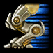
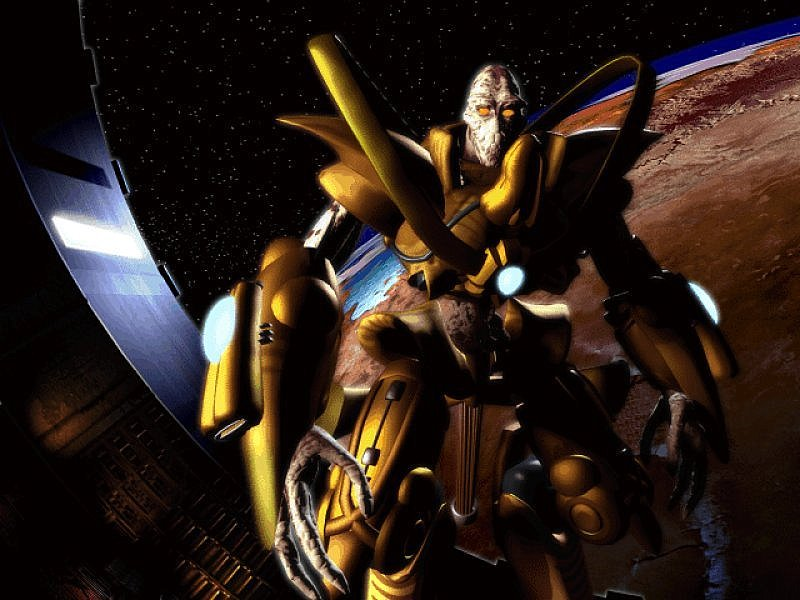
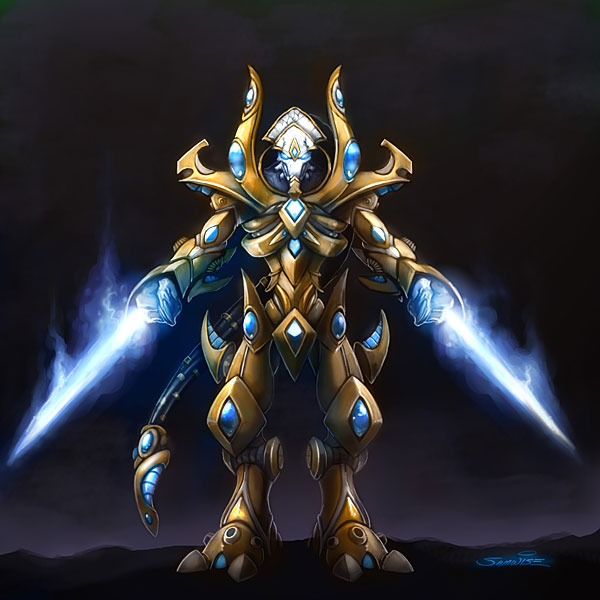

- Stats
- Abilities/Upgrades
- Strategy
- Lore
- Related
Armor: 1 |
 0/0 0 per second
0/0 0 per secondDamage: 8
Attacks: 2
Cooldown: 1.2
Targets: Ground only
Attack Range: 0.1 (Melee)
2.75 with  Charge
Acceleration: 1000
Collision Radius: 0.5
Requirements: Levels 2-3 requires Twilight Council
| Level |  Level 1 Level 1 |  Level 2 Level 2 |  Level 3 Level 3 |
| Minerals |  100 100 | 150 | 200 |
| Vespene Gas |  100 100 | 150 | 200 |
| Time |  160 160 | 190 | 220 |
| Damage Bonus | +1 | +2 | +3 |
| Total Damage | 9 (x2) | 10 (x2) | 11 (x2) |
100Vespene Cost:
0Supply:
 2
2Produced From:Gateway/Warpgate Build Time:
38/5Warpgate Cooldown: 28
Requirements: Gateway
Warp Prism Size: 2
Unit Type: Light, Biological, Ground
Requirements: Levels 2-3 requires Twilight Council
| Level |  Level 1 Level 1 |  Level 2 Level 2 |  Level 3 Level 3 |
| Minerals | 100 | 150 | 200 |
| Vespene Gas | 100 | 150 | 200 |
| Time | 160 | 190 | 220 |
| Armor Bonus | +1 | +2 | +3 |
| Total Armor | 2 | 3 | 4 |
Requirements: Levels 2-3 requires Twilight Council
| Level |  Level 1 Level 1 |  Level 2 Level 2 |  Level 3 Level 3 |
| Minerals | 150 | 225 | 300 |
| Vespene Gas | 150 | 225 | 300 |
| Time | 160 | 190 | 220 |
| Armor Bonus | +1 | +2 | +3 |
| Total Armor | 1 | 2 | 3 |
| Icon | Minerals | Vespene Gas | Research Time | Researched At |
| 200 | 200 | 140 | Twilight Council |
Cooldown:
10Duration:
3.5Range: 4
Information: Upon research of this ability Zealots are given a passive speed boost to 2.75 from 2.25, and a charge ability. The charge ability allows the Zealot to rapidly approach an enemy, temporarily increasing the Zealot's speed to 3.3.
In order to activate the ability, the Zealot must have a valid path within a certain distance. This prevents the Zealot from being able to charge through obstructions like cliffs or rocks to reach their target.
As of patch 1.3, Zealots will always hit a fleeing enemy at least once upon charge activation (Terrain willing).
If you have any suggestions for more strategies, go ahead and post on the forums 'here'!
+1 Weapons vs Zerglings
When Zealots have a +1 weapon advantage versus Zerglings, they will kill Zerglings in two attacks instead of three. This makes Zealots very effecient against Zerglings until the zerg catches up in armor upgrades.
Because of this, there are a handful of timing attack that take advantage of the effecient +1 weapon zealots, forcing the zerg to make spines, roaches, or some other unit than zerglings unless the zerg wants to trade inefficiently.
+1 Weapons vs Zerglings
Sum text about how gosu this is
+1 Weapons vs Zerglings
Sum text about how gosu this is
- Overview
Zealots are lower-ranked Templar who have yet to reach the upper levels of the Khala. Each zealot is trained for decades in hand-to-hand combat, tactics, pain tolerance and martial discipline.
Zealots are taught to hate their enemies with a white hot passion and to hunt them down without mercy. Through the path of the Khala, zealots learn to hone their innate battle rage to a fine edge, though they can invoke a near-berserker rage when in battle if need be. They form the backbone of the protoss military.
{kind=link}
All protoss have a degree of psionic power, the zealots using theirs exclusively on the art of war. Using a limited form of precognition, zealots can predict enemy movements, striking with deadly accuracy and dodging attacks.
After the Brood War, some zealots developed the ability to turn their body into pure energy for a few microseconds. This allows them to move at lightning-fast speeds and strike suddenly against an enemy that thinks they are out of range. Seething with shame at the loss of Aiur, the zealots have dedicated themselves to more intense physical training as well. This includes duels at the end of their training, which appears to have the potential to be shortened.
{kind=link}
In battle, zealots wield psionic blades channelled through forearm units in their power suits. Augmented by cybernetic implants, zealots also use their psionic powers to surround themselves with a plasma shield. Even a handful of zealots can easily control an entire colony of lesser species, as they are capable of tearing through armored structures and vehicles alike.
A severely injured zealot may be transported off the battlefield upon the moment of defeat, in order to be transformed into a dragoon or an immortal.
Source Information
Text information from the Starcraft Wiki.
Photo 1 created by Blizzard Entertainment. Copyright: Blizzard Entertainment.
Photo 2 created by Samwise Didier. Copyright: Blizzard Entertainment.
| Protoss |
| Units |
| Nexus | Probe | Mothership |